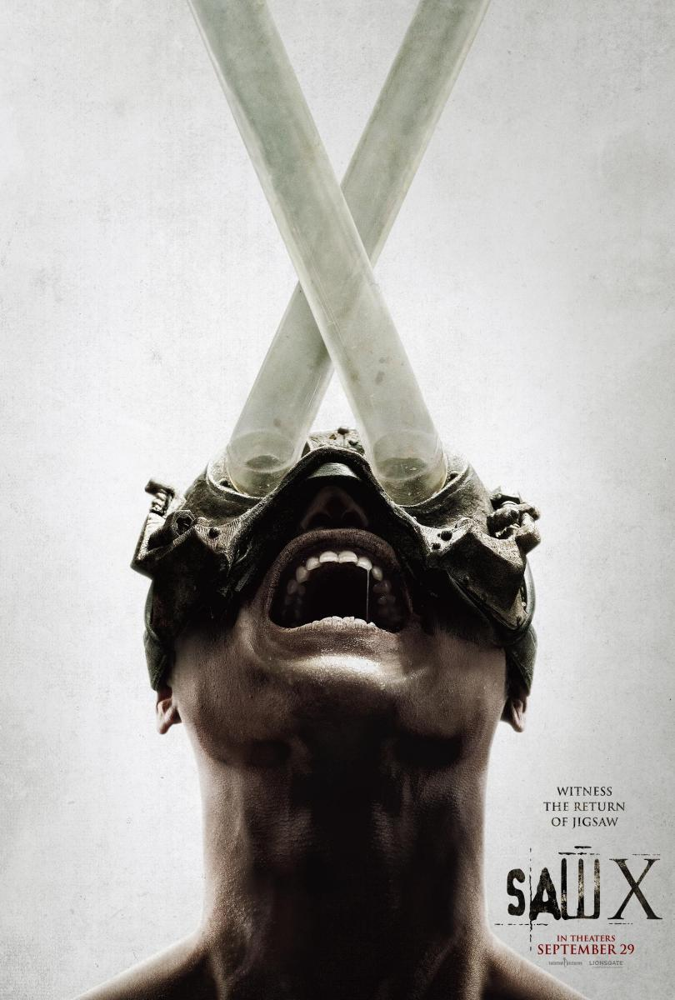
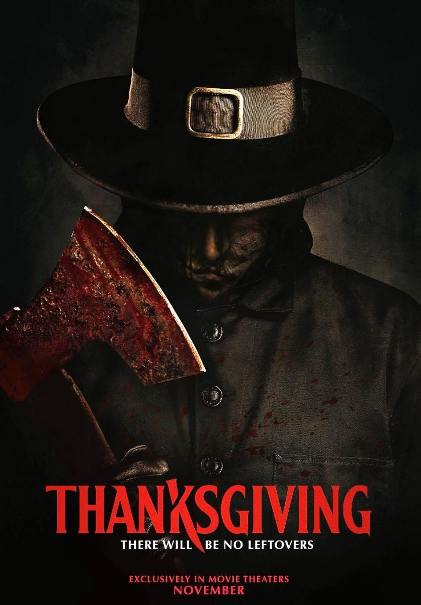
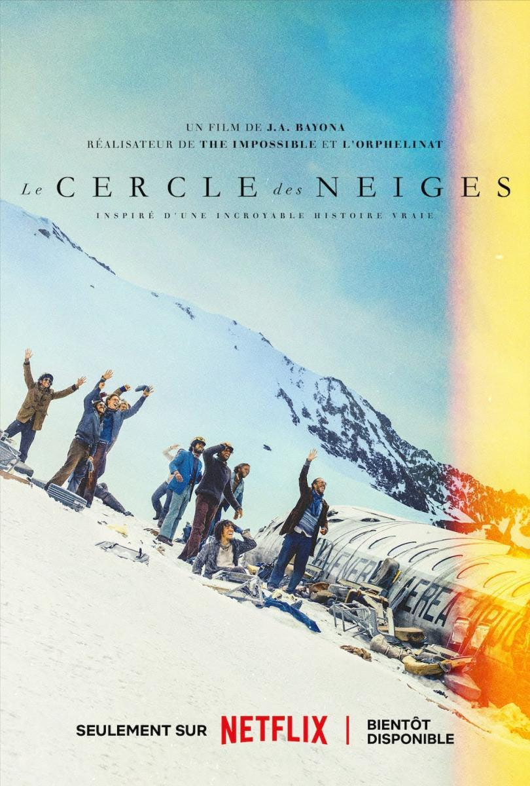

¿Quieres saber cuales son algunas de las Películas estrenadas en 2023?
Aquí podrás encontrar 10 del gran número de Películas estrenadas durante este año,cabe recalcar que no siguen ningún criterio a la hora de ser elegidas y ordenadas.
1. La monja II

8 de septiembre de 2023
Vuelve el Warrenverso. A pesar del éxito de 'La monja' en 2018, la anunciada secuela se ha hecho esperar. En 'La monja 2', la hermana Irene a la que da vida Taissa Farmiga se volverá a encontrar cara a cara con Valak, la monja demonio y artífice de muchas de nuestras pesadillas.
2. Misterio en Venecia
15 de septiembre de 2023
Tras 'Asesinato en el Orient Express' y 'Muerte en el Nilo', el Hercules Poirot de Kenneth Branagh vuelve para resolver un tercer misterio. Ambientada en la Venecia después de la Segunda Guerra Mundial, 'Misterio en Venecia' sigue a un Poirot retirado que asiste a regañadientes a una sesión de espiritismo, donde uno de los asistentes será asesinado.
3. Los mercen4rios
29 de septiembre de 2023
El veterano mercenario Barney «Esquizo» Ross y su equipo de tipos duros están de regreso . Uno de los mayores alicientes de 'Los mercenarios 4' será comprobar la química entre estos veteranos y la incorporación de Megan Fox. Por lo tanto, si te estabas preguntando qué fue de Megan Fox, la actriz vuelve por todo lo alto con u correspondiente ración de patadas y puñetazos al lado de estas leyendas del cine de acción.
4. Saw X
29 de septiembre de 2023
'Saw 1.5' para no liar al público al estar situada entre la película original y 'Saw II', nos reencontramos con un John Kramer desesperado viajando a México para someterse a un tratamiento experimental que promete curar el cáncer que padece. Pero como las promesas son cada vez más difíciles de cumplir, es más infalible el sistema lúdico, el de 'jugar a un juego'.
5. Thanksgiving
17 de noviembre de 2023
Eli Roth vuelve al mundo Grindhouse que idearon Quentin Tarantino y Robert Rodriguez en 2007 con 'Death Proof' y 'Planet Terror' y que continuó el propio director mexicano con 'Machete' y su secuela. De esta manera, Roth cristaliza el falso tráiler de 'Thanksgiving' en un largometraje que pretende homenajear en tono paródico el slasher de los 70 y 80 a través de la figura de un asesino en serie que comienza, cuchillo en mano, su particular Día de Acción de Gracias.
6. Los Juegos del Hambre:
17 de noviembre de 2023
Tras el éxito de la saga de 'Los juegos del hambre' lleva Balada de pájaros cantores y serpientes, el universo se expande con 'Balada de pájaros cantores y serpiente', una secuela que se basa en la novela homónima de Suzanne Collins publicada en 2020. Rachel Zegler, del remake de 'West Side Story', será la protagonista. Historia ambientada décadas antes de la llegada de Katniss Everdeen.
7. La sociedad de la nieve
4 de enero de 2023
Bayona le devuelve a los desastres de grandes dimensiones y necesidad de supervivencia: tras 'Lo imposible' y su paso por franquicias como 'Jurassic Park' y 'El señor de los anillos', el director español recoge en 'La sociedad de la nieve' la historia real de un accidente sucedido en los Andes en 1972, cuando un equipo de rugby uruguayo se quedó atrapado en mitad de las montañas y se vio obligado a sobrevivir a toda costa.
8. Napoleón
24 de noviembre de 2023
Ridley Scott vuelve al drama histórico junto a Joaquin Phoenix, que da vida a una de las figuras más emblemáticas de la historia de Francia: Napoleón Bonaparte. Con Vanessa Kirby en el papel de su amor verdadero Josefina, 'Napoleón' ejercerá de biopic del hombre tras el mito desde sus orígenes como líder militar francés y ascenso a emperador.
9. Wonka
15 de diciembre de 2023
En el primer tráiler de 'Wonka' pudimos ver a Timothée Chalamet asumiendo el emblemático papel de la película de Paul King cuenta también con Sally Hawkins, Rowan Atkinson, Jim Carter, Olivia Colman y Keegan-Michael Key, y contará la juventud del personaje, al que conocimos en las páginas de 'Un mundo de fantasía' de Roadl Dahl.
10. Oppenheimer

21 de julio de 2023
Christopher Nolan vuelve a la gran pantalla con 'Oppenheimer', una película histórica sobre el hombre que creó la bomba atómica. El físico estadounidense J. Robert Oppenheimer, al frente del Laboratorio de Los Alamos y del proyecto Manhattan. Cillian Murphy interpreta al protagonista, y le acompañan en el reparto Emily Blunt, Matt Damon, Robert Downey Jr, Rami Malek y más. ¿Podría convertirse en una de las mejores películas de Christopher Nolan?